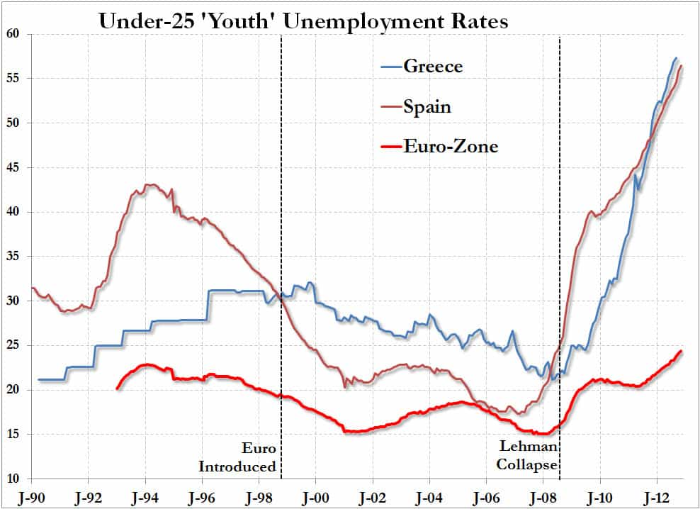
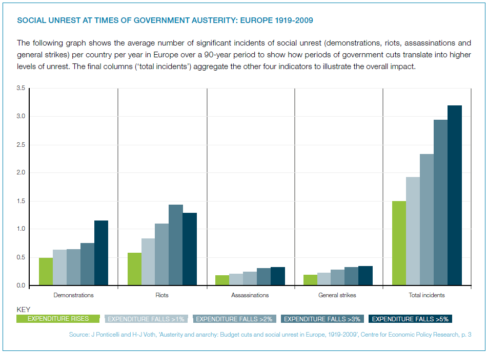

Samseau is a player philosopher psychologist who enjoys a good discussion. You can follow him on Twitter.


Did you think the 2011 riots in Greece were bad? That’s when their youth unemployment was only 40 percent. Now it’s at a staggering 55 percent, and increasing exponentially:

As one Zerohedge commenter astutely noted,
Looks like we get to 100% youth unemployment in Spain and Greece sometime around 2017.
Which is impossible because at that point there would be full-scale youth militias robbing and pillaging in order to survive. But the hilarity of his point stands.
Combine this with the fact that Europe is going to have to impose harsher forms of austerity this year due to the political impossibility of more bailouts, as Merkel is up for reelection and most Germans aren’t too keen on bailing out Greece for a fourth time, let alone the much larger economy of Spain, and we have a recipe for total chaos.
It’s almost guaranteed that the ECB (European Central Bank) will print a couple hundred billion to paper things over, but it will not reduce the need for austerity. Which brings us to the main point: civil unrest.
Examine this graph from eXiled and tell me if you disagree:

After the riots start in Greece and Spain, it will probably spread to Italy and southern France (especially with their large Islamic population) as they face similar problems.
Will this come to America? I’m not sure, but I’m wondering if I can travel to Greece this summer and experience a pussy paradise: I get a fun night, and she gets a bite to eat?
Read More: Is It Easier To Get Laid In Poor Countries?